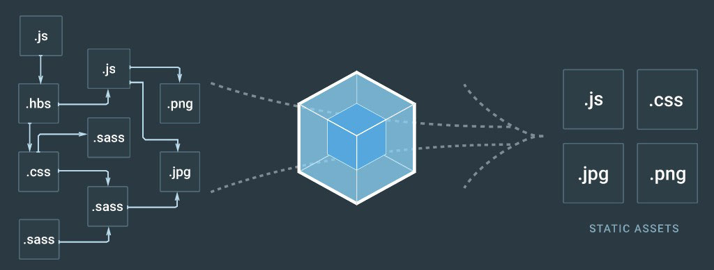

Webpack 2

Webpack in simple words, is a module bundler.
Module bundling is a practise meant to reduce the http request to speedup the apps in http/1.1
The new http/2 protocol addresses this issue & gets multiple file in one request.
Webpack also meant to insist module programming. The more modular, the more managable code
Webpack bundles every dependencies into a single js file ( js, css, image, audio, video ).
But, for the goodness of human race, Its not recommended.
This is an extreme case of webpack.
In webpack, everything is module. Not just javascript
It adds all dependencies to dependency graph & generates bundle
It can do job of a task runner & a module bundler.
with a proper configuration.
The concepts may hard to grab initially.
Apparently, It improve your workflow drastically
Best fit for React projects.
Installation
npm install webpack --save-dev
Config is a simple commonjs module that returns the config object
Core concepts
Loaders -
Helps to extend webpack's behaviour.
It can perform transformation, preprocessing files
Chainable
We can configure them via query parameters
Loaders should be installed via npm
Dependency expressions
ES6 import statement
Commonjs require() statement
AMD define or require statement
@import statement inside stylesheets. (loader required) Any urls inside stylesheet url(...) or html file <img src='...' /> (loader required)
Auto module injection (plugin required)
The way you tell webpack about file dependencies
Lot of module systems are there in js. Webpack supports most of them
It has special behaviours. It can handle CSS, HTML dependencies as well
Better practise is to follow a single pattern thorough out the project
Resolving Paths
Its important to know how webpack locates the dependencies
Example
```js
//forest.js
import Tree from './tree';
import Water from './water';
let tree = new Tree();
let water = new Water();
tree.pour(water);
...
```
```js
//tree.js
import Leaf from './leaf';
import Root from './root';
import './colors.css';
class Tree {
....
}
export default Tree;
```
```js
//water.js
class Water { .... }
export default Water;
```
```js
//leaf.js
class Leaf { .... }
export default Leaf;
```
```js
//root.js
class Root { .... }
export default Root;
```
```css
/* colors.css */
.leaf { color: green; }
.root { color: brown; }
.water { color: transparent; }
```
forest.1234abcd.js
contains js dependencies, css & webpack bootstrap code
So far, we've done with the basic essentials
Code splitting
split the output bundle into multiple files (chunks)
load one MB of js, not good
Leverage browser cache system
Vendor code splitting
```js
//main.js
import $ from 'jquery'
import Promise from 'es6-promise' ...
```
Vendor codes are common in a typical app
Mostly, vendor code doesn't change. App code changes frequently
So, seperate vendor code
Keep the hash constant for vendor chunk
```js
module.exports = {
entry: './main.js',
output: {
path: path.resolve( __dirname, 'build' ),
filename: '[name].[chunkhash:8].js'
}
} ...
```
```js
module.exports = {
entry: {
main: './main.js', //main.9897dsfd.js
lib: [ 'jquery', 'es6-promise' ] //lib.2144546.js
},
output: {
path: path.resolve( __dirname, 'build' ),
filename: '[name].[chunkhash:8].js'
}
...
}
```
*1.* Use multiple entries
Code Duplication
```js
const webpack = require('webpack');
module.exports = {
entry: {
main: './main.js', //main.9897dsfd.js
lib: [ 'jquery', 'es6-promise' ] //lib.2144546.js
},
output: {
path: path.resolve( __dirname, 'build' ),
filename: '[name].[chunkhash:8].js'
},
plugins: [
new webpack.optimize.CommonsChunkPlugin({
name: 'lib' //common bundle's name.
})
]
}
...
```
*2.* Add webpack's "CommonsChunkPlugin"
Uncertain hash
```js
const webpack = require('webpack');
module.exports = {
entry: {
main: './main.js', //main.9897dsfd.js
lib: [ 'jquery', 'es6-promise' ] //lib.2144546.js
},
output: {
path: path.resolve( __dirname, 'build' ),
filename: '[name].[chunkhash:8].js'
},
plugins: [
new webpack.optimize.CommonsChunkPlugin({
names: [ 'lib', 'manifest' ] // libs + extracted manifest
})
]
}
...
```
*3.* Extract manifest (webpack's runtime code)
Build files
```bash
1. manifest.1sd1sd13.js
2. lib.9sd8sd9t.js
3. main.2sd5sds4.js
```
CSS splitting
CSS inside a js module, doesn't load asyc & parallel
causes Flash of unstyled content - FOUC
Extract CSS bundle from JS module
CSS splitting
ExtractTextWebpackPlugin
CSS splitting
Build files
```bash
1. manifest.1sd1sd13.js
2. lib.9sd8sd9t.js
3. main.2sd5sds4.js
4. main.568s4878.css #Extracted css bundle
```
On demand code splitting
Create dynamic split points in application code
```js
if(window.location.indexOf('admin') > 0)
import('./adminModuleYouLikeToSplit').then( (module) => {
//module available here
})
```
```js
require.ensure([], () => {
let module = require('./someModuleYouLikeToSplit'),
anotherModule = require('./anotherModuleYouLikeToAdd');
//modules available here
})
```
On demand code splitting
Build files
```bash
1. manifest.1sd1sd13.js
2. lib.9sd8sd9t.js
3. main.2sd5sds4.js
4. main.568s4878.js #new chunk, webpack auto fetches it
```
Webpack dev server
Simple express server
Serves webpack assets from memory
Reloads the browser on change
Supports live reload & HMR
```bash
$ npm install webpack-dev-server --save-dev
```
```js
devServer: {
contentBase: path.resolve(__dirname, 'build'),
host: 'localhost',
port: '8080',
proxy: 'http://localhost:8000'
}
```
```bash
$ webpack-dev-server #through package.json's scripts
```
Dynamic file reference
Dynamic([name].[hash:8].js)
main.df54s6df.js
main.5441324s.js
main.fbgfgh54.js
Static ([name].build.js)
main.build.js
main.build.js
main.build.js
Change the js reference in html on each build?
Not a good idea!
Dynamic file reference
Single page application with one html entry file?
Use "HtmlWebpackPlugin" !
Dynamic file reference
Backend app generates html layout?
Get asset manifest using "WebpackAssetsManifest" plugin
Use the asset manifest file on your backend code
Dynamic file reference
Get asset manifest
```js
const WebpackAssetsManifest = require('webpack-assets-manifest');
module.exports = {
...
plugins: [
new WebpackAssetsManifest({
output: 'path/to/manifest.json'
})
]
...
}
```
A Sample manifest json file
```json
{
"lib.js": "/build/js/lib.27ab3f70.js",
"main.css": "/build/style/main.2c2cca10.css",
"main.js": "/build/js/main.2c2cca10.js",
"manifest.js": "/build/js/manifest.d41d8cd9.js"
}
```
Use asset manifest in your backend code
```php
// backend layout code of a blade engine
<link rel="stylesheet" href="{{ webpack_asset('main.css') }}" />
<script src="{{ webpack_asset('manifest.js') }}"></script>
<script src="{{ webpack_asset('lib.js') }}"></script>
<script src="{{ webpack_asset('main.js') }}"></script>
```
```php
function webpack_asset( $asset ) {
$json = json_decode( file_get_contents('path/to/manifest.json') );
return $json->{ $asset };
}
```
Few useful plugins
ProvidePlugin
OfflinePlugin
ImageminPlugin
Questions?
Webpack has powers.
It also has pitfalls that one can easily fall under.
It leads to abuse webpack. It can do more harm to your app.
So, you should be careful configuring webpack &
periodically check the application build
to make sure everything is good